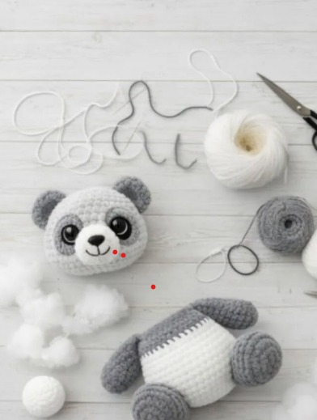

Nino isn't just an amigurumi: he's the first companion I'm inviting you to make, a gentle way into crochet with no pressure to get it "right."
We don't crochet to finish fast. We crochet to slow down.
What you'll need
- Light grey and off-white yarn (DK weight)
- 3mm crochet hook
- 8mm safety eyes
- Polyester stuffing
Step 1 — The head
Start with a magic ring of 6 single crochet stitches. Increase steadily until you reach 24 stitches: this is the most mechanical part, so let your hands work without overthinking it.
Step 2 — The black patches
This is where Nino gets his personality. Take your time on the outlines: there's no wrong version of a handmade panda.
← Back to articles